Neurons, Neural Masses and Sources
Jupyter Notebook: Please work on
neuron_mass.ipynb.
<iframe width="560" height="315" src="https://www.youtube.com/embed/Ptqv16fhOtg?si=ZWIhBGO9oZO9H22d" title="YouTube video player" frameborder="0" allow="accelerometer; autoplay; clipboard-write; encrypted-media; gyroscope; picture-in-picture; web-share" referrerpolicy="strict-origin-when-cross-origin" allowfullscreen></iframe>Introduction
The main distinction between the neuron, neural mass and source Blox we will encounter on this session is the mechanism by which they communicate with other Bloxs. All neural mass Bloxs, some sources, and neurons of the Hodgkin-Huxley (HH) family have continuous output variables which are included as terms in the postsynaptic Blox's differential equations. The alternative is an event-based connection. Neurons of the Izhikevich and the Integrate-and-fire families of models operate this way as we have previosuly seen. Sources that simulate spike trains may also operate the same way via callbacks.
Learning goals :
- visualize results from neuron and neural mass Blox simulations
- introduce external sources as Blox
- drive single neuron and neural mass activity using external sources
Neurons and Neural Masses
As a first example we will consider a neural mass WilsonCowan Blox of Excitation-Inhibition (E-I) balance. This is a two-dimensional reduction over a population of excitatory and inhibitory neurons with continuous dynamics.
using Neuroblox
using OrdinaryDiffEqTsit5, OrdinaryDiffEqVerner
using CairoMakie
# Set the random seed for reproducible results
using Random
Random.seed!(1)
@named nm = WilsonCowan()
# Retrieve the simplified ODESystem of the Blox
sys = system(nm)
tspan = (0, 100) # ms
prob = ODEProblem(sys, [], tspan)
sol = solve(prob, Tsit5())
fig, ax = plot(sol);
axislegend(ax) ## add legend to the plot
fig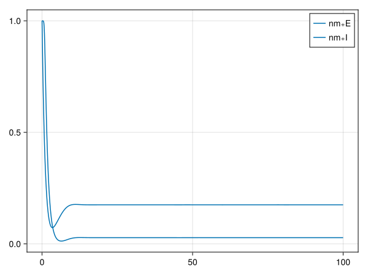
Using the generic plot function we visualize all states of our model. We can retrieve specific variables by using
E = state_timeseries(nm, sol, "E") ## retrieves state `E` of Blox `nm`
fig = lines(E); ## simple line plot
fig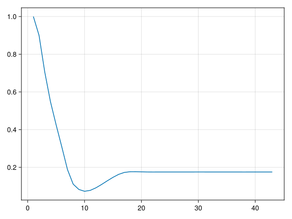
Moving on to neurons, we will use a Quadratic Integrate-and-fire (QIF) neuron model with an added callback that increases the input current after 60 ms.
@named qif = QIFNeuron(; I_in=4)
# We can pass additional events to be included in the final system.
sys = system(qif; discrete_events = [60] => [qif.I_in ~ 10])
tspan = (0, 100) # ms
prob = ODEProblem(sys, [], tspan)
sol = solve(prob, Tsit5());Besides the generic plot function, Neuroblox includes some plotting recipes specifically for neuron models. A raster plot with chosen spike threshold
fig = rasterplot(qif, sol; threshold=-40);
fig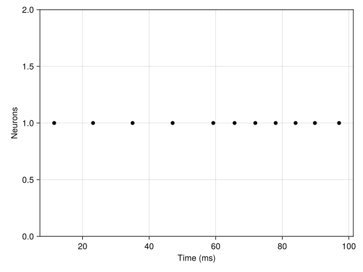
and a firing rate plot, again by setting the spike threshold and the window size for averaging
fig = frplot(qif, sol; threshold=-40, win_size=20);
fig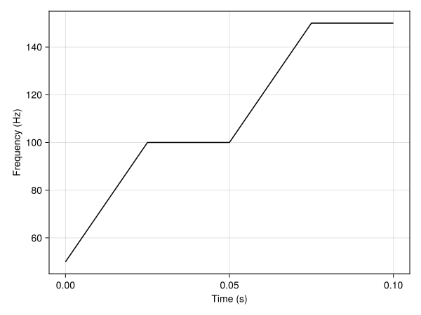
We can easily extract the voltage timeseries of neurons by
V = voltage_timeseries(qif, sol) ## equivalent to `state_timeseries(qif, sol, "V")`
fig = lines(V);
fig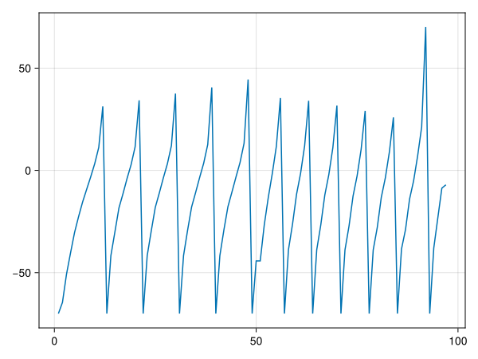
Finally we simulate an HH neuron with stochastic dynamics which was introduced in this article on deep brain stimulation in the subthalamic nucleus. The model includes a brownian noise term affecting D(V) which you can inspect using the equations function.
using StochasticDiffEq ## to access stochastic DE solvers
@named hh = HHNeuronExci_STN_Adam(; σ=2) ## σ is the brownian noise amplitude
sys = system(hh)
prob = SDEProblem(sys, [], (0, 1000))
sol = solve(prob, RKMil())
# Plot the powerspectrum of the solution
fig = powerspectrumplot(hh, sol; sampling_rate=0.01);
fig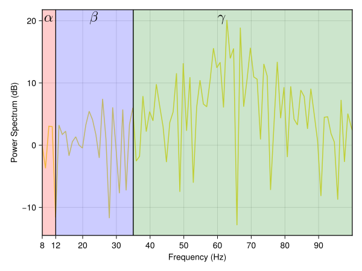
We can use all other plots from above with this stochastic HH neuron since it is a subtype of Neuron. Given its stochastic nature it might be additionally meaningful to show the powerspectrum of its activity.
Exercise: Try changing the influence of the stochastic term. What do you notice about the powerspectrum of
HHNeuronExci_STN_Adam_Blox?
Sources
External sources in Neuroblox are a particular Blox subtype (<: AbstractBlox) which contains a system with output and no input variables. Naturally source Bloxs can only connect to other (non-source) Blox and can not receive connections from any Blox. There are two main categories of sources, ones with continuous dynamics for their variables and ones that operate through events (callbacks).
Continuous Input Sources
These sources are comprised of algebraic (and potentially differential) equations that become part of the dynamics of Bloxs that the source connects to. We will drive the WilsonCowan Blox above with a ConstantInput source. The connection between the two Bloxs looks like
@named inp = ConstantInput(; I=3)
connection_rule(inp, nm, weight=1)Connections :
inp => nm
Equations :
nm₊jcn(t) ~ w_inp_nm*inp₊u(t)
Weights :
w_inp_nm
This source simply adds a fixed current to the input variable (nm₊jcn) of the downstream (destination) Blox.
g = MetaDiGraph()
add_edge!(g, inp => nm, weight = 1)
@named sys = system_from_graph(g)
prob = ODEProblem(sys, [], tspan)
sol = solve(prob, Tsit5())
fig, ax = plot(sol);
axislegend(ax)
fig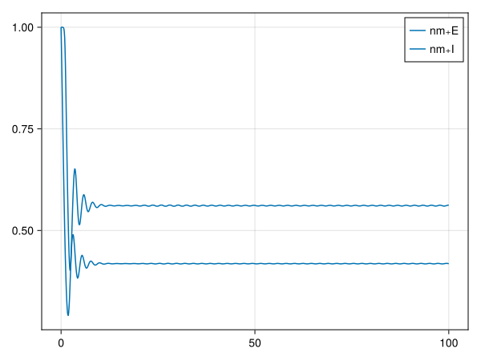
Notice how the E-I balance has shifted after adding our input. We will work with a more complex circuit for E-I balance on the next session and learn more about its intricacies.
We can create custom sources with continuous input the same way we create custom Bloxs and write custom connection rules for them as we have seen in the previous session.
Event-based Spike Sources
This type of source operates entirely through callbacks. One common example is a source that simulates spiking from presynaptic neurons that we do not explicitly include in our model. Each time the source's callback is triggered, it affects parameters and/or variables of its postsynaptic neurons which are part of our model. Commonly it is assumed that the spiking of neurons follows a Poisson process. Therefore we have implemented a source in Neuroblox that generates spikes that are distributed according to a Poisson distribution for any finite length of time.
tspan = (0, 200) # ms
spike_rate = 0.01 # spikes / ms
@named spike_train_rate = PoissonSpikeTrain(spike_rate, tspan)PoissonSpikeTrain{Vector{Float64}}(:spike_train_rate, nothing, 1, [0.01], [(0, 200)], 0.01, Random.TaskLocalRNG())The PoissonSpikeTrain needs a timespan Tuple (tspan) to generate spikes within it. Above we have set a fixed spike_rate for our process. Alternatively we can also define the spike train with a variable spike_rate that is sampled according to any univariate distribution.
using Distributions
tspan = (0, 200) # ms
# Define a `NamedTuple` holding a `distribution` and a `dt` field
spike_rate = (distibution = Normal(1, 0.1), dt = 10)
@named spike_train_dist = PoissonSpikeTrain(spike_rate, tspan)PoissonSpikeTrain{@NamedTuple{distibution::Distributions.Normal{Float64}, dt::Int64}}(:spike_train_dist, nothing, 1, (distibution = Distributions.Normal{Float64}(μ=1.0, σ=0.1), dt = 10), (0, 200), 0.01, Random.TaskLocalRNG())When choosing a variable spike_rate we need to set a dt that dictates how often the distribution will generate a new spike_rate sample. The units of dt match the units of tspan which by default is ms in Neuroblox.
Exercise: Define a
LIFExciNeuron, connect aPoissonSpikeTrainto it and tune the source parameters to make the neuron spike. You can visualize spiking usingrasterplotandfrplotas above.
We can create custom event-based spike sources with a bit more effort compared to continuous ones. Here is a worked example with comments on the necessary steps :
struct BernoulliSpikes <: AbstractSpikeSource
name ## necessary field
namespace ## necessary field
tspan ## necessary field
probability_spike
dt
function BernoulliSpikes(probability_spike, tspan, dt; name, namespace=nothing)
new(name, namespace, tspan, probability_spike, dt)
end
endWe import generate_spike_times and write our own dispatch that generates and returns a vector of spike times.
import Neuroblox: generate_spike_times, connection_spike_affects
function generate_spike_times(source::BernoulliSpikes)
t_range = source.tspan[1]:source.dt:source.tspan[2]
t_spikes = Float64[]
for t in t_range
if rand(Bernoulli(source.probability_spike))
push!(t_spikes, t)
end
end
return t_spikes
endgenerate_spike_times (generic function with 3 methods)We also import connection_spike_affects and dispatch it by pairing our new source with any neuron that we want to affect. In this function we write all equations that should be evaluated each time source spikes. The w input is necessary and it is the symbolic connection weight, same as in connection_equations.
function connection_spike_affects(source::BernoulliSpikes, ifn::IFNeuron, w)
eqs = [ifn.I_in ~ ifn.I_in + w]
return eqs
end
tspan = (0, 500)
@named s = BernoulliSpikes(0.05, tspan, 5)
@named ifn = IFNeuron()
g = MetaDiGraph()
add_edge!(g, s => ifn, weight=1)
@named sys = system_from_graph(g)
prob = ODEProblem(sys, [], tspan)
sol = solve(prob, Tsit5())
fig = rasterplot(ifn, sol);
fig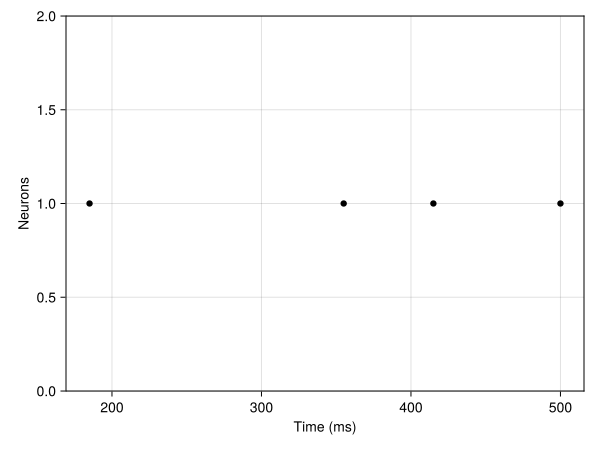
Notice how spikes become more and more frequently over time. Can you tell why this is happening?
Deep Brain Stimulation
Neuroblox contains specialized sources that are common to the field of Deep Brain Stimulation (DBS). These sources simulate stimulation patterns by external probes that are continuous in time, yet contain discrete changes (jumps) on their variables. Even though these sources are often used in DBS protocols, they are implemented as any other source so they can be connected to any other Bloxs given a connection rule. We will first visualize the sources on their own and then connect them to an HH excitatory neuron.
# Square pulse stimulus
@named stim = DBS(
frequency=100.0, ## Hz
amplitude=200.0, ## arbitrary units, depends on how the stimulus is used in the model
pulse_width=0.5, ## ms
offset=0.0,
start_time=5.0, ## ms
smooth=0.0 ## modulates smoothing effect
);
tspan = (0, 100) ## ms
dt = 0.001 ## ms
ts = tspan[1]:dt:tspan[2]
# `stimulus` is a function that is also a field of `DBS` objects.
# It turns a time vector into a vector of stimulus values of the same length given the object's parameters.
stim_fun = get_stimulus_function(stim)
stimulus = stim_fun.(ts)
fig = Figure();
ax1 = Axis(fig[1,1]; xlabel = "time (ms)", ylabel = "stimulus")
lines!(ax1, ts, stimulus)
fig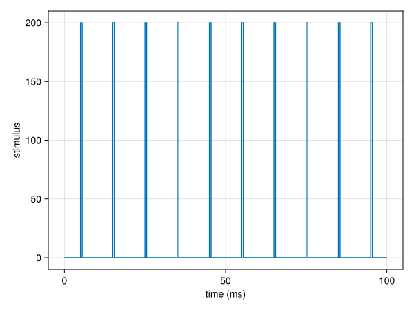
We can also generate a smoothed pulse train as
@named stim_smooth = DBS(
frequency=100.0,
amplitude=200.0,
pulse_width=0.5,
offset=0.0,
start_time=5.0,
smooth=1e-3
);
stim_fun = get_stimulus_function(stim_smooth)
smooth_stimulus = stim_fun.(ts)
fig = Figure();
ax1 = Axis(fig[1,1]; xlabel = "time (ms)", ylabel = "stimulus")
lines!(ax1, ts, stimulus) ## plot the un-smoothed stimulus from above
xlims!(ax1, 4.9, 5.6) ## set the x-axis limits for better visibility of a smoothed pulse
ax2 = Axis(fig[2,1]; xlabel = "time (ms)", ylabel = "stimulus")
lines!(ax2, ts, smooth_stimulus) ## plot the smoothed stimulus
xlims!(ax2, 4.9, 5.6) ## set the x-axis limits for better visibility of a smoothed pulse
fig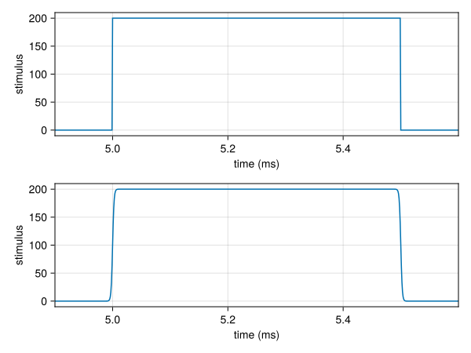
It is also possible to create a stimulus protocol that does not follow a simple periodic stimulation schedule as above and contains multiple pulses before a quiet time window:
frequency = 20.0
amplitude = 1.0
pulse_width = 20.0
smooth = 3e-4
pulse_start_time = 0.01
offset = 0
pulses_per_burst = 3
bursts_per_block = 2
pre_block_time = 200.0
inter_burst_time = 200.0
@named dbs = ProtocolDBS(
frequency=frequency,
amplitude=amplitude,
pulse_width=pulse_width,
smooth=smooth,
offset=offset,
pulses_per_burst=pulses_per_burst,
bursts_per_block=bursts_per_block,
pre_block_time=pre_block_time,
inter_burst_time=inter_burst_time,
start_time = pulse_start_time);
t_end = get_protocol_duration(dbs)
t_end = t_end + inter_burst_time
tspan = (0.0, t_end)
dt = 0.001
ts = tspan[1]:dt:tspan[2]
stim_fun = get_stimulus_function(dbs)
stimulus = stim_fun.(ts)
fig = Figure();
ax1 = Axis(fig[1,1]; xlabel = "time (ms)", ylabel = "stimulus")
lines!(ax1, ts, stimulus)
fig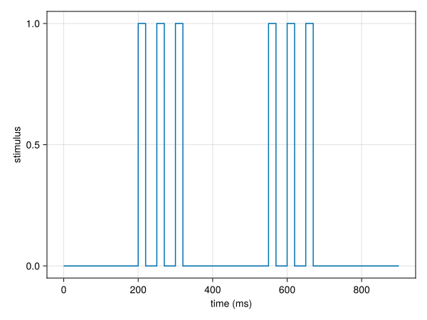
Now let's finally connect our ProtocolDBS source to an HH excitatory neuron and simulate
@named nn = HHNeuronExci(I_bg=0.4)
g = MetaDiGraph()
add_edge!(g, dbs => nn, weight = 10.0)
@named sys = system_from_graph(g)
prob = ODEProblem(sys, [], tspan)
transitions_inds = detect_transitions(ts, stimulus; atol=0.001)
transition_times = ts[transitions_inds]
transition_values = stimulus[transitions_inds]
sol = solve(prob, Vern7(), saveat=dt, tstops = transition_times);NOTE: We have used
detect_transitionsto find all points where the stimulation switches on and off. Such points can lead to discontinuities in the dynamics of our model and thus to imprecise solutions. Adding the transition points explicitly aststopswhen solving will force the chosen solver to stop righ before and after each transition and evaluate the equations for greater precision and stability.
# Retrive the timeseries of the voltage variable (`nn₊V`) from the solution
v = voltage_timeseries(nn, sol)
# Plot the voltage and stimulation timeseries on two axes on the same window.
fig = Figure();
ax1 = Axis(fig[1,1]; xlabel = "time (ms)", ylabel = "Voltage (mV)")
lines!(ax1, sol.t, v)
ax2 = Axis(fig[2,1]; xlabel = "time (ms)", ylabel = "Stimulus (μA/cm²)")
lines!(ax2, sol.t, stimulus)
fig
Challenge Problems
- Implement a custom
SpikeSourceof your choice. Hint: theBernoulliSpikesimplementation above. - Write a function that plots the f-I curve of a Blox. Hint: Consider a
ContantInputsource to vary input currents andfiring_rate(blox, solution; threshold=...)to calculate firing rates. - Write a function that plots the Peristimulus time histogram of a Blox around a given timepoint. Hint: use the
historbarplotplotting functions fromMakieanddetect_spikes(blox, solution; threshold=...)to find spikes.
References
- [1] Gerstner W, Kistler WM, Naud R, Paninski L. Neuronal Dynamics: From Single Neurons to Networks and Models of Cognition, Parts I & II. Cambridge University Press; 2014.
- [2] Adam, Elie M., et al. "Deep brain stimulation in the subthalamic nucleus for Parkinson's disease can restore dynamics of striatal networks." Proceedings of the National Academy of Sciences 119.19 (2022): e2120808119.
This page was generated using Literate.jl.